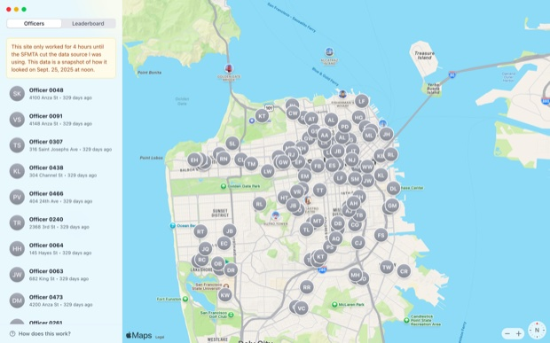
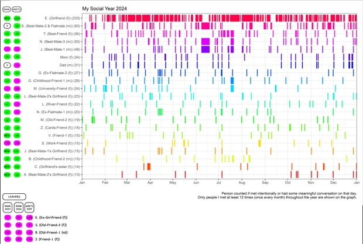
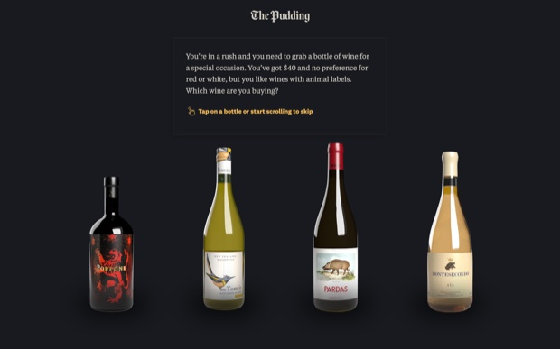
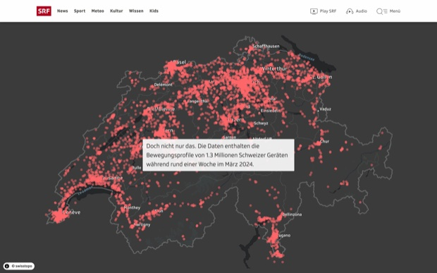
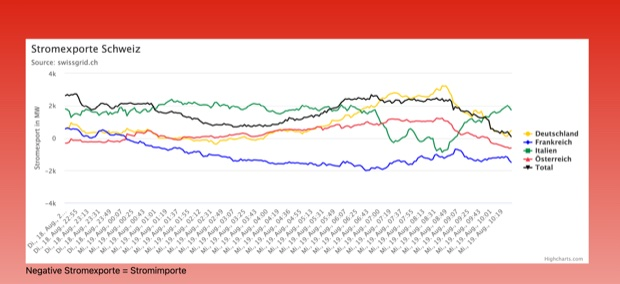

Bewegt euch zu zweit durch den Raum und notiert pro Posten zwei Dinge:
- Welche Daten stecken dahinter?
- Woher stammen sie, und über welchen Zeitraum wurden sie gesammelt?





Bewegt euch zu zweit durch den Raum und notiert pro Posten zwei Dinge:
Der Aufbau einer Seite.
Ihr Aussehen.
Interaktivität.
Daten von einer API laden.
Alles davon läuft im Browser und heisst zusammen Frontend.
Die Daten hat jemand anderes gesammelt, geprüft und gespeichert.
Verschwindet die API, verschwindet auch euer Projekt.
Die beiden markierten Schritte sind neu und heissen zusammen Backend.
Ab jetzt gehören euch die Daten, weil ihr sie selbst speichert.
Eine Geschichte, die ohne Daten nicht erzählbar wäre.

Jeder Schritt ist eine eigene PHP-Datei mit genau einer Aufgabe.
Extract, Transform und Load werden in der Praxis so genannt und zu ETL abgekürzt.
Unload ist unser eigener Name für den Schritt danach.
Alle Folien, Übungen und Cheatsheets liegen im GitHub-Repo des Kurses.
Auf jeden Input folgt möglichst schnell etwas zum Selbermachen.
Ihr beantwortet eine Frage mit Daten, die ihr selbst beschafft, gespeichert und sichtbar gemacht habt.
Zahlen, die eine Frage wirklich beantworten können.
Ein Zeitraum, über den sich etwas verändert.
Eine Grafik, in der man die Veränderung sieht.
Text, der sagt, warum das jemanden angeht.
Die ersten beiden Teile beschafft ihr, die letzten beiden gestaltet ihr.
| Was steht | |
|---|---|
| M1 | Gruppen gebildet |
| M2 | Eigene Datenfrage formuliert |
| M3 | Datensatz gefunden und geprüft |
| M4 | Erster Extract und Datenvertrag stehen |
| M5 | Transform funktioniert |
| M6 | Daten stehen in der Datenbank |
| M7 | Unload-Endpunkt funktioniert |
| M8 | Erste Integration steht |
| M9 | Marktstand (Oktober) |
| M10 | Abgabe (Januar) |
Den ersten Meilenstein macht ihr heute: Die Gruppen bilden wir direkt im Anschluss an diese Folien.
Pascal Albisser
Datenjournalist bei SRF und ehemaliger MMP-Student.
Zürich am 13.10., Bern und Chur am 15.10.
Ihr führt euer Projekt am eigenen Stand vor.
An beiden Terminen ist Anwesenheitspflicht.
| Was | Wann |
|---|---|
| Vorbereitungsauftrag Tooling | vor dem ersten Kurstag |
| Gruppen und Rollen stehen | heute |
| Datenjournalismus mit Pascal Albisser | 28. September |
| Marktstand Zürich | 13. Oktober |
| Marktstand Bern und Chur | 15. Oktober |
| Letzte Coachingmöglichkeit | Freitag, 16. Oktober, 18:00 Uhr |
| Projektabgabe | 8. Januar 2027, 23:59 Uhr |
Den Planer findet ihr online.
Änderungen bleiben vorbehalten.
Die Semesterinfos gehen wir jetzt gemeinsam direkt im Dokument durch.
Ihr arbeitet zu viert und teilt euch in zwei Zweierteams:
Ihr holt die Daten, säubert sie und speichert sie in der Datenbank.
Am Ende liefert ihr einen JSON-Endpunkt aus.
Ihr baut die Story und die Grafik.
Ihr startet mit erfundenen Daten und wechselt später auf den echten Endpunkt.
Damit das zusammenpasst, einigt ihr euch auf einen Datenvertrag.